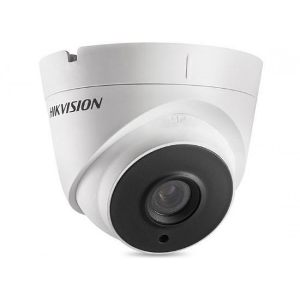
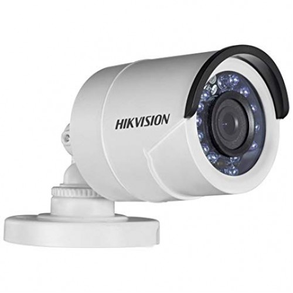

HikVision DS-2CE16C0T-IRP HD IR bullet camera
Price
1,150৳
Regular Price
1,230৳
Status
In Stock
Product Code
2847
Brand
Hikvision
Features
Model: HikVision DS-2CE16C0T-IRP HD
Sensor: 1MP CMOS Image Sensor
Lens: 3.6mm
IR Range: Up to 20m

Hikvision DS-2CE56C0T-IT3F IR Dome CC Camera
Price
1,950৳
Regular Price
2,145৳
Status
In Stock
Product Code
9729
Brand
Hikvision
Features
Model: Hikvision DS-2CE56C0T-IT3F IR
Sensor: 1 MP CMOS image sensor
Lens: 3.6 mm
Type - HD720P
IR Range: Up to 40m

Hikvision DS-2CE16C0T-IRPF HD720P IR Bullet Camera
Price
1,050৳
Regular Price
1,124৳
Status
In Stock
Product Code
9657
Brand
Hikvision
Features
Model: Hikvision DS-2CE16C0T-IRPF
Image Sensor: 1MP CMOS Image Sensor
Signal System: PAL/NTSC
Effective Pixels: 1296(H)x732(V)
Lens M12
Hikvision DS-2CE56D0T-IRF HD Dome CC Camera
Price
1,650৳
Regular Price
1,766৳
Status
In Stock
Product Code
3983
Brand
Hikvision
Features
Model: Hikvision DS-2CE56D0T-IR
Sensor:2.0 CMOS
Lens: 3.6mm, Fixed
IR Range: 20m